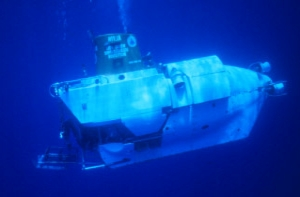

|  copyright - WHOI |
|
Alvin is a deep diving research vessel designed specifically
for oceanographic research. It is owned by the US Navy and operated by
WHOI. Capable of diving 14,764 feet deep, Alvin makes as many as
200 dives a year.
Alvin’'s numerous unique dives have made it famous. In 1966
Alvin was pressed into service by the US Navy to perform a unique
salvage operation. A hydrogen bomb had accidentally been dropped off the
coast of Spain in the Mediterranean Sea. After two attempts Alvin
successfully located the bomb. In 1974 Alvin was used for Project
Famous (French -American Mid-Ocean Underwater Studies), and made 17 dives
along the rift valley of the Mid-Atlantic Ridge. Alvin is also well
known for its use in the discovery and observation of the ocean liner Titanic.
The sub has completed more than 3,300 dives.
Note: for further information on Alvin'’s first 25 years see, Water
Baby, the Story of Alvin by Victoria A Kaharl, Oxford University Press,
1990.